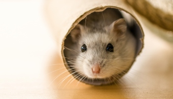

An Odd Recipe for Happiness

(Caution:Your mileage may vary)
Ingredients
- Food
- Shelter
- Exercises
- Sense of Security
- Hobbies
- Acceptance of your own feelings
- Hamsters
Steps
- Eat food regularly
- Find things or people that you appreciate (including yourself!)
- Learn new things, whether small or large
- Take breaks instead of struggling for hours. Exercise is a good one; jumping jacks can do the trick. You can do burpees if you really desire
- Validate your own feelings, then ask yourself where did this emotion come from. If you think that they make you feel uncomfortable, think about what made you feel that way in the first place. Is there anything that you can do to help changing it?
(Special note: this is different than trying to justify your actions.)
- Look at your hamster running around in its wheel. Isn't it adorable and your heart, along with today's bad memories, just melting away?
If you don't have one, look up some pictures of hamsters on the Internet. I found Instagram to be a great source
- Always try to get a good night sleep. If you need help to get the sleep started, ask your doctor. Hugs from someone close to you also help. Or this video of hamster in bed...
- Have sweet dreams. Sleep tight. Or f up that monster in your dreams with your sheer willpower
(Hamster picture from RSPCA.)
Return to Homepage